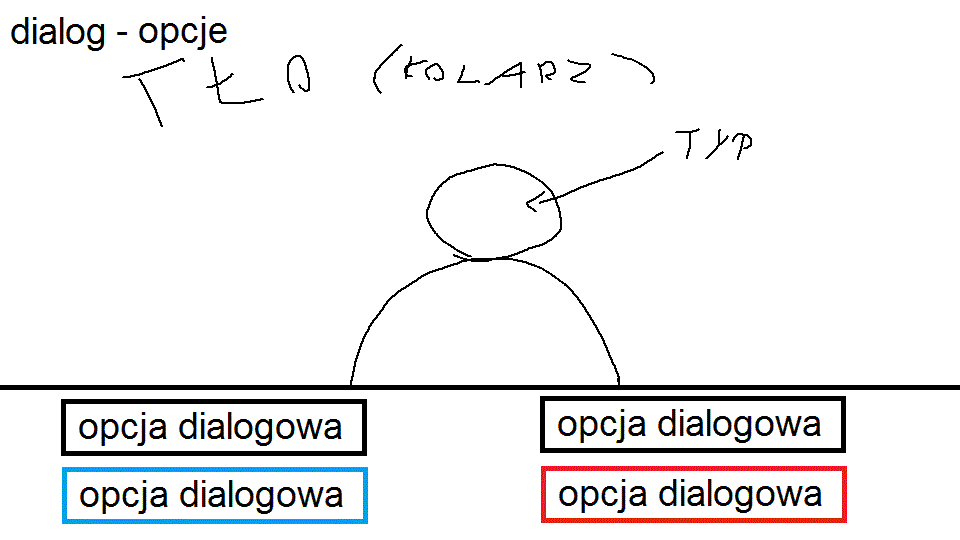
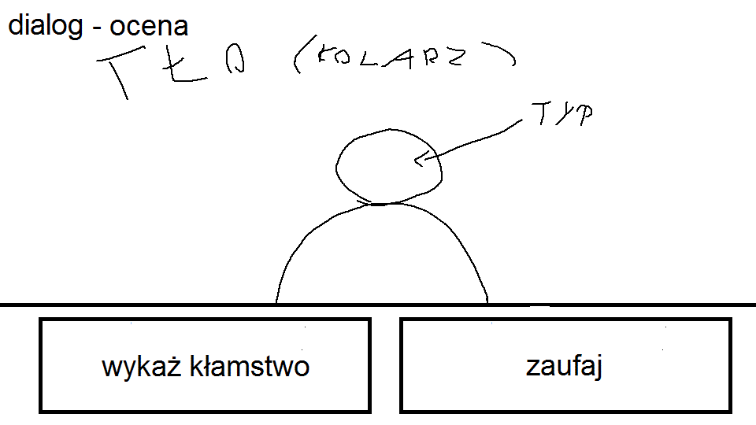
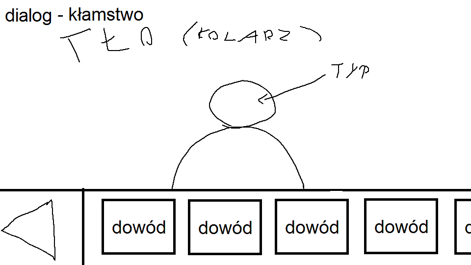
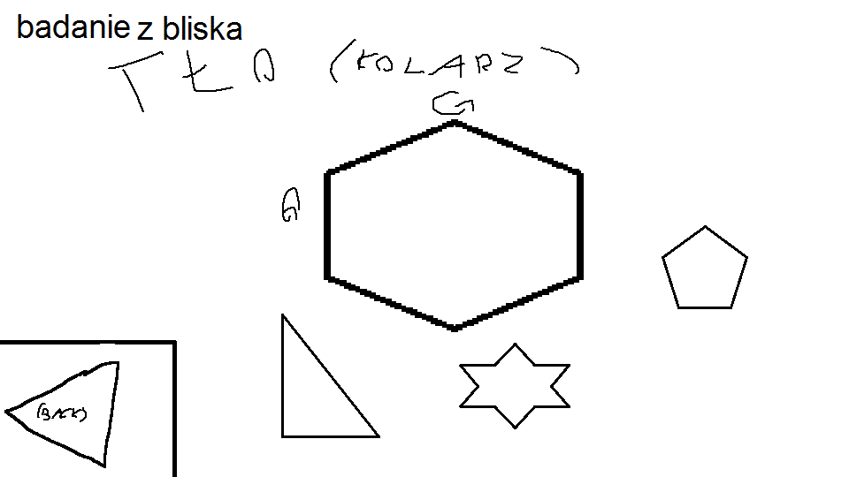

Celem gracza na tym etapie jest zebranie jak najwięcej dowodów i informacji od świadków w celu zidentyfikowania głównego podejrzanego.
Rozgrywka odbywa się w kilku lokalizacjach pomiędzy którymi gracz może swobodnie się poruszać. Mogą to być np. miejsce zbrodni, mieszkanie świadka, mieszkanie ofiary itd.
Każda lokalizacja ma przypisane jedno tło będące kolarzem fotograficznym.
Kwestia dialogowa wypowiadana przez widzianą postać lub gracza
Czasem gracz ma do wyboru kilka odpowiedzi na wypowiedź danej postaci. Dostępność niektórych opcji zależy od charakteru gracza jak w mass effect. Czerwona opcja jest dostepna w ścieżce bezwzględnej a niebieska w praworządnej.
Na zakończenie kwestii dialogowej gracz musi zdecydować czy ufa świadkowi czy też uważa, że świadek kłamie. W przypadku wybrania opcji "wykaż kłamstwo" gracz będzie musiał wybrać odpowiedni dowód przeczący temu co powiedział świadek.
Aby wykazać kłamstwo gracz musi wybrać odpowiedni, zebrany wcześniej dowód.
Oprócz rozmawiania ze świadkami, gracz może badać lokalizację w której się znajduje.
Po kliknięciu na jakiś przedmiot
opcja 1 (trudna)pojawi się jego model 3D na ekranie, i gracz może nim obracać na wszystkie strony aby zbadać go dokładniej
opcja 2 (łatwiejsza)odbędzie się dialog prowadzący do dodania poszlaki (lub nie)